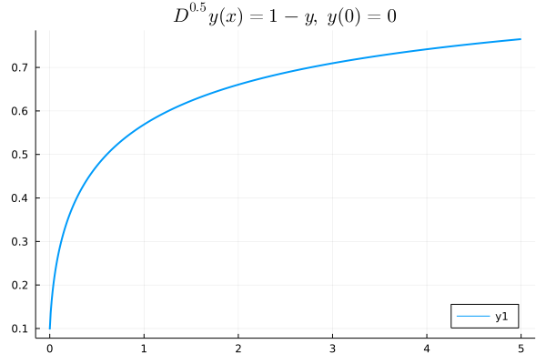

Get Start
What is Fractional Differential Equations?
While the Ordinary Differential Equations and Partial Differential Equations are widely used in enormous areas and play important roles in their theoretical analysis, someone may asks, ODE and PDE are enough for nowadays modeling, has FDE any usage in our life?
Well, fractional differential equation can be seen as the generalization of ODE and PDE. In our daily life, models usually are better described in fractional differential equations.
A special applying case for fractional differential equations is viscoelasty, which research the property of a subject with both Viscosity and Elasticity.
And also the CRONE controller and $PI^\lambda D^\mu$ controller deploy fractional derivative to better describe system.
A simple example —— Relaxation Oscillation Equation
Let's see a simple model involving fractional differential equations: Relaxation Oscillation Process
\[D^{1.8}y(t)+y(t)=1,\ (t>0)\]
\[y^{(k)}(0)=0\]
We can solve the Relaxation Oscillation Equation using FractionalDiffEq.jl:
using FractionalDiffEq, Plots, LaTeXStrings
s="\$D^{0.5}y(x)=1-y,\\ y(0)=0\$"
fun(x, y) = 1-y
prob=FDEProblem(fun, 0.5, 0, 5, 0.01)
result=solve(prob, PECE())
tspan=collect(0:0.01:5)
plot(tspan, result, title=s, linewidth=2, legend=:bottomright)By ploting the numerical result, we can get the approximation result:

FDE with specific initial value
While the former examples we only use the zero initial value problem, here, we can look at some problems with non-zero examples.
Some Algorithms explanation:
As a matter of fact, to solve a fractional differential equations is to solve a volterra integral equation: